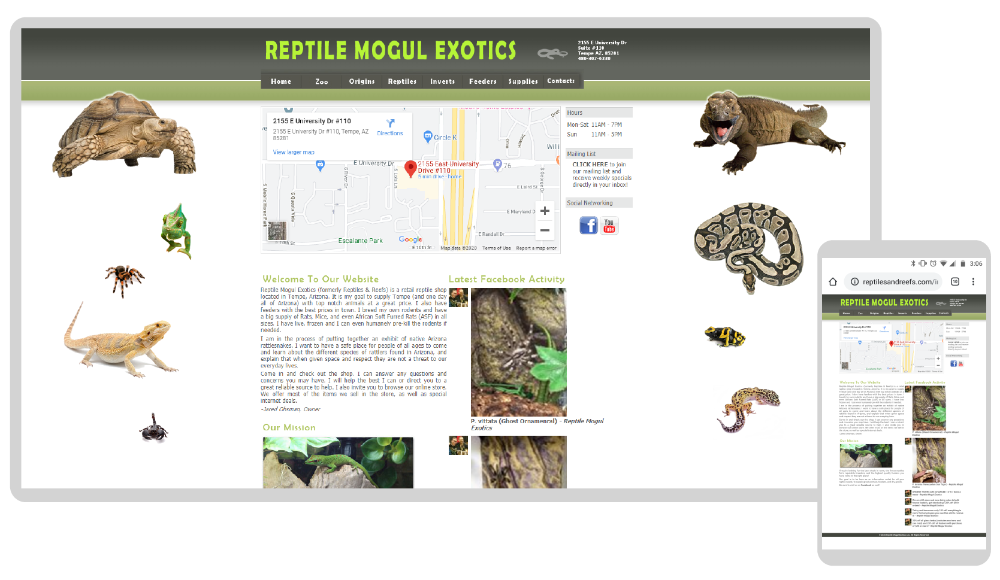

Reptile Mogul Exotics
Website & Logo Redesign
Reptile Mogul Exotics, a reptile store in Tempe, Arizona, was in need of a new website. In this project, my goal is to redesign and rebuild the site to be clean, modern, and responsive, as well as redesign their logo and set some brand guidelines in place.
Current Website & Branding
Their current site is outdated, lacking information, and is not responsive for different screen sizes, making it difficult to use on smaller screens.
Content & Wireframes
To start out, I first examined the site content to find what was lacking and what needed to be removed. Then, I edited, rewrote, and rearranged the information to be more effective, cutting out repetetive details and adding missing information. Once the content was finalized, I created wireframes to determine the layout of pages.

Mockups
Based on the wireframes, I then created high-fidelity mockups to decide the visual style of the site.
Redesigned Logo & Brand Style
To create a more consistent brand, I designed a new logo and decided on a color palette and typefaces.
Development
The final site was developed using the mobile-first approach, and some design changes were made throughout development to improve upon the original mockups.
The redesigned site can be viewed here.